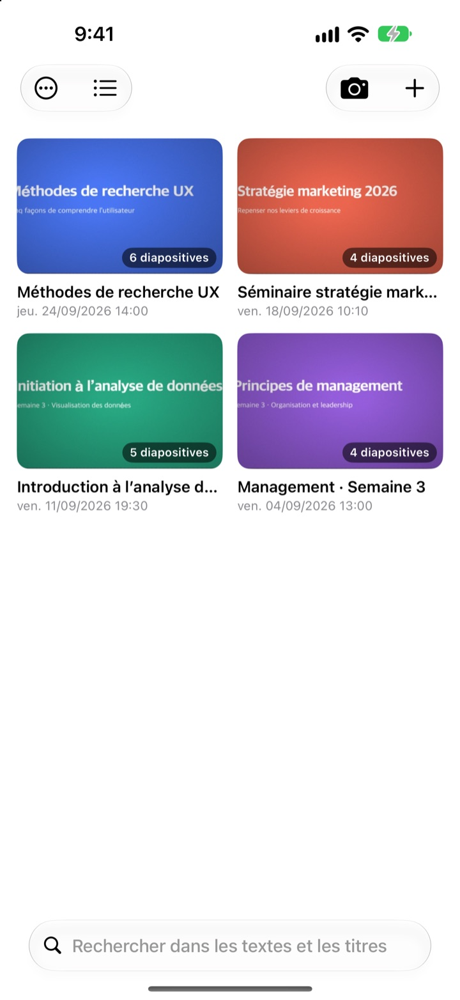
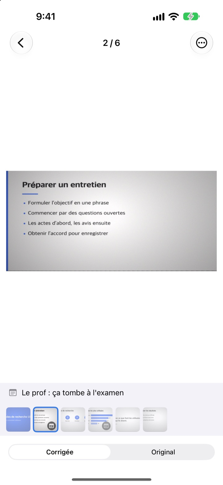
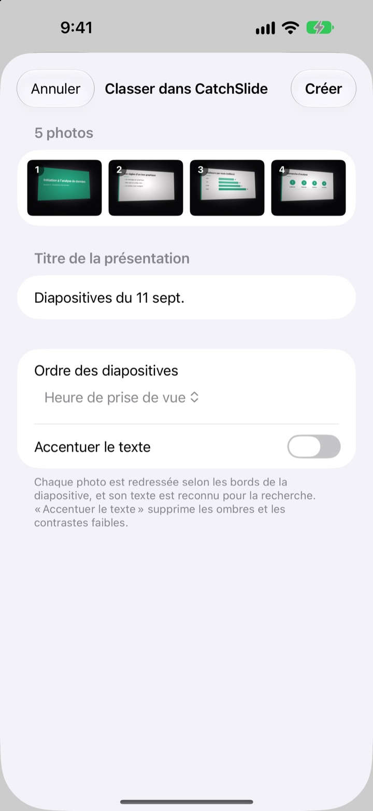
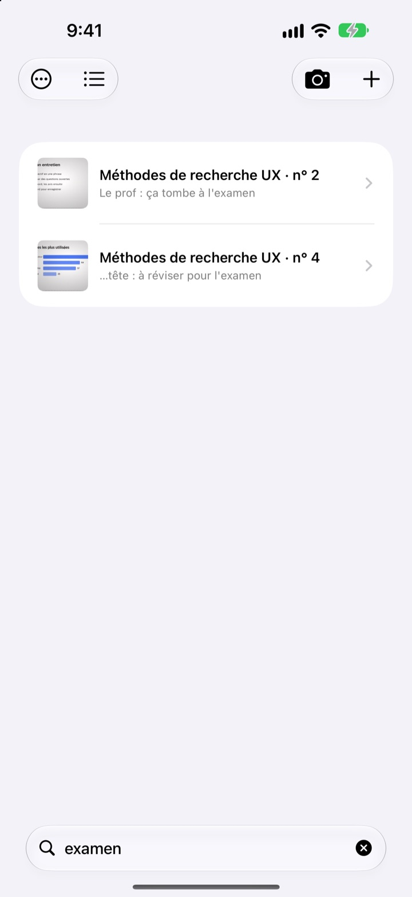

Prise de côté.
Enregistrée de face.
L’appareil photo repère les quatre coins de la diapo, la redresse et coupe tout ce qui l’entoure. Les diapos prises à la suite se retrouvent dans la même présentation.
Un seul achat, toutes les fonctions. Ni abonnement, ni compte.

Redressez-la vous-même
Cette photo a été prise de biais depuis une place sur le côté de l’amphi. Le contour vert indique les coins repérés.
Vous avez déjà ouvert votre pellicule pour réviser sans retrouver la diapo ?
Prises du fond de la salle, les diapos sont toujours de travers et se perdent entre les selfies et les tickets de caisse. Dans un amphi silencieux, le bruit du déclencheur suffit à vous faire hésiter. CatchSlide photographie sans bruit, redresse chaque diapo et les range par présentation.
Droite dès la prise
L’appareil photo suit en direct les quatre coins de la diapo et passe au vert quand il les tient. Même prise de biais, la diapo est redressée comme vue de face, sans le décor autour.
Aucun bruit de déclencheur. Activez Capture automatique et chaque nouvelle diapo est prise d’elle-même, les photos floues sont ignorées.

Vos photos existantes, d’un coup
Choisissez plusieurs photos de cours dans l’app Photos et partagez-les avec CatchSlide. Elles sont redressées et rangées en une seule présentation, dans l’ordre de prise de vue.Accentuer le texte efface les ombres et le contraste terne.

Un seul mot suffit pour la retrouver
CatchSlide lit le texte de chaque diapo directement sur votre appareil. Des semaines plus tard, un seul mot vous ramène à la bonne diapo.
Les notes ajoutées aux diapos sont aussi cherchables. Notez partiel sur quelques-unes et tout le programme de l’examen tient en une recherche.

Trois étapes pour commencer
- 1
Ouvrez l’appareil photo
Depuis le bouton de la liste, le widget de l’écran d’accueil ou l’écran verrouillé.
- 2
Cadrez la diapo
Quand les coins passent au vert, déclenchez ou laissez faire la capture automatique.
- 3
Révisez par présentation
Cherchez, ajoutez des notes et exportez un PDF de révision.
Ce que vous pouvez faire d’une présentation
- Enregistrement
- Enregistrez le son pendant la prise de vue, puis écoutez chaque diapo à partir du moment où vous l’avez prise
- Transcription
- Transforme l’enregistrement en texte, affiche ce qui a été dit sur chaque diapo et sert à la recherche
- Résumé par IA
- Résume la présentation à partir du texte des diapos et de la transcription (iOS 26 ou ultérieur sur les appareils compatibles avec Apple Intelligence)
- Des supports de révision avec une, deux ou quatre diapos par page
- Markdown
- Un .zip prêt pour Notion ou Obsidian
- PowerPoint
- Export en .pptx, la transcription dans les notes de l’intervenant
- Fusion
- Sélectionnez plusieurs présentations et réunissez-les en une
- Synchronisation iCloud
- Activez-la pour retrouver vos présentations sur vos autres appareils avec le même identifiant Apple. Désactivée par défaut
- Widgets
- Ouvrent l’appareil photo directement depuis l’écran d’accueil ou l’écran verrouillé
La reconnaissance de texte, la transcription et les résumés par IA se font sur votre appareil.
Un achat, tout est inclus
CatchSlide
- Prise de vue silencieuse, capture automatique et redressement
- Import de plusieurs photos depuis Photos
- Diapos rangées par présentation, recherche dans le texte et les notes
- Enregistrement, transcription et résumé par IA
- Export PDF, Markdown et PowerPoint
- Synchronisation iCloud et widgets
Pourboire (facultatif)
- Si l’app vous rend service, vous pouvez laisser un petit pourboire au développeur
- Le pourboire ne débloque rien. Toutes les fonctions marchent sans
Rendez-vous dans Mes informations.
Pas d’abonnement ni d’achat pour débloquer des fonctions. Le prix pour votre pays est indiqué dans l’App Store.
Questions fréquentes
Comment photographier une diapo ?
Ouvrez l’appareil photo et cadrez la diapo. Quand les coins passent au vert, déclenchez. Avec la capture automatique activée, la diapo suivante est prise d’elle-même à chaque changement.
Y a-t-il un bruit de déclencheur ?
Non. L’image est enregistrée directement depuis l’appareil photo, c’est donc silencieux dans tous les pays.
Pourquoi mes photos sont-elles regroupées en une présentation ?
Si vous prenez la photo suivante moins de 5 minutes après la précédente, elle rejoint la même présentation. Touchez le titre dans la liste pour la renommer, et utilisez Fusionner des présentations pour réunir celles qui ont été séparées.
Puis-je ajouter des photos déjà prises ?
Oui. Sélectionnez-les dans l’app Photos et partagez-les avec CatchSlide, ou touchez ＋ dans la liste puis Importer depuis Photos. Elles sont redressées et rangées en une présentation, dans l’ordre de prise de vue.
Les coins ont été mal repérés.
Ouvrez la diapo, choisissez Ajuster les coins dans le menu ⋯ et faites glisser les quatre coins au bon endroit. Détection automatique les cherche à nouveau et Image entière garde toute la photo. L’original est toujours conservé, vous pouvez donc recommencer quand vous voulez.
Puis-je chercher dans le texte des diapos ?
Tapez un mot dans le champ de recherche en haut de la liste. La recherche porte sur le texte des diapos, les titres, les notes et les transcriptions, et vous mène directement à la diapo. La reconnaissance de texte se fait sur votre appareil.
Comment exporter un PDF ?
Dans une présentation, ouvrez le menu de partage, choisissez Exporter en PDF puis une, deux ou quatre diapos par page. Depuis la feuille de partage, enregistrez-le dans Fichiers ou envoyez-le vers une autre app.
Comment réordonner ou supprimer des diapos ?
Dans une présentation, maintenez une diapo puis faites-la glisser. Le même menu permet de supprimer ou partager une diapo, et Sélectionner en supprime plusieurs d’un coup.
Comment marchent l’enregistrement et le résumé par IA ?
Activez Enregistrement en haut de l’appareil photo et chaque diapo garde le son de ce moment-là. Dans Notes de la présentation, Résumer avec l’IA rédige un résumé à partir du texte des diapos et de la transcription. Il faut iOS 26 ou ultérieur sur un appareil compatible avec Apple Intelligence.
Où sont stockés mes diapos et enregistrements ?
Sur votre appareil. Ils ne partent sur votre propre iCloud que si vous activez Synchroniser dans Mes informations, et aucun compte n’est nécessaire. Plus de détails dans la Politique de confidentialité.
Une question, un bug, une idée ? Écrivez à leeo@kakao.com.